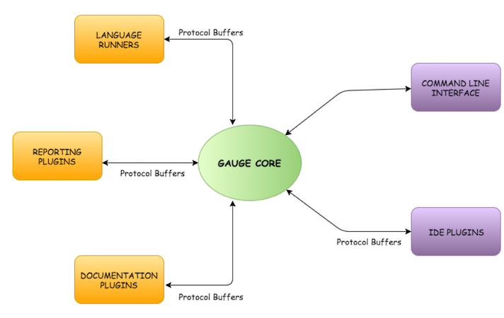
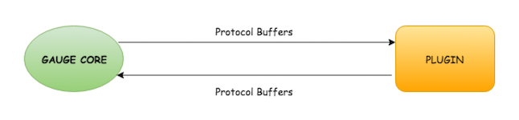

Gauge exposes a plugin architecture which allows extending Gauge with features without bloating the core of Gauge. Gauge's features — like language support, IDE integration, execution reports and documentation generators — are implemented as plugins.
Here is an overview of how the plugin architecture looks like:

Gauge's architecture consists of the Gauge core and its plugins. Plugins can be of multiple types: language runners, reporting plugins, IDE plugins and documentation plugins. The list of plugin types is not exhaustive. Gauge's architecture is flexible enough to allow new types of plugins to be added later on as necessary.
Gauge Core
Gauge core is the centre of delegation. It is responsible for parsing specifications and orchestrating execution. It doesn't understand any language specific test implementations.
Gauge core communicates with all plugins to perform various actions via messaging API defined through Protocol Buffers. Gauge core and any of the plugin are two independent processes talking to each other over TCP.

Language Runners
Language runners are plugins which enable users to write Gauge test implementations in different programming languages. Currently, Gauge supports Java, Ruby, C# and [few other languages](http://getgauge.io/plugins/index.html. These plugins are responsible for running test implementations written in the target programming language, depending on the step that Gauge core asks them to execute.
Reporting Plugins
Reporting Plugins generate reports about the tests run by Gauge. Once test suite execution is complete, Gauge core sends aggregated data about the execution to these plugins. These plugins convert that test data to meaningful reports based on their purpose.Currently, Gauge has HTML and XML reporting plugins. The HTML reporting plugin produces a static HTML execution report, while the XML report produces a JUnit-style XML.
You can add multiple plugins in a Gauge project to have Gauge produces different types of reports.
IDE Plugins
IDE plugins integrate Gauge closely with IDEs, allowing test authors to use their IDEs to author and execute Gauge tests. These plugins use Gauge API to talk with Gauge core. Currently Gauge has IDE plugins for IntelliJ and Visual Studio. These provide navigation, auto complete and a number of other usability features by integrating with IDE.
There are a number of other types of plugins like documentation generator, plugins to build and manage project dependencies etc.
What happens when you run gauge specs from command line?
This invokes Gauge core which loads the environment, checks for parse errors in specs and validates them. It then calls the language runner to execute them. Gauge core knows about which language runner the execution should be delegated to and langauge runner knows to execute the language specific implementations. Gauge core consolidates the entire test result and delegates it to a report plugin to generate reports.
How does this architecture help Gauge?
As most of the functionalities which are common across all the languages are handled by Gauge core, the runners are very light weight. As a result, writing a test runner is fairly straightforward and can be easily plugged in to Gauge core. This also makes Gauge more extensible.
With the Plugin based architecture, Gauge has a lot more to offer to you. We are just getting warmed up. If you have a cool idea for a new plugin or if you just want to say "hi", we would love to talk to you! :)